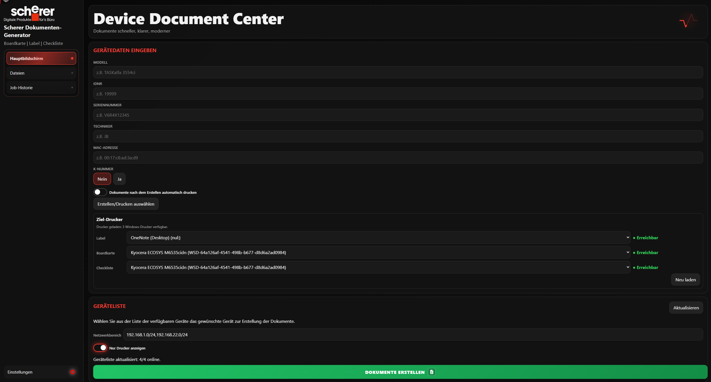
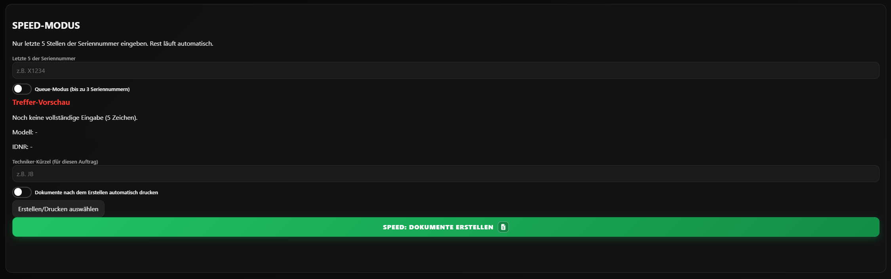
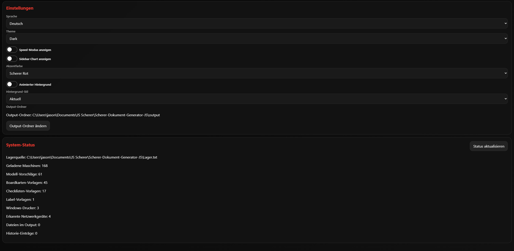

Simples, modernes UI
Klare Oberfläche mit schnellen Wegen zur Dokumenterstellung ohne unnötige Klicks.
Scherer Service Tool
Der Scherer Dokument-Generator automatisiert Label, Boardkarte und Checkliste inklusive Druck-Workflow für Techniker im Feld.
Klare Oberfläche mit schnellen Wegen zur Dokumenterstellung ohne unnötige Klicks.
Daten werden intelligent übernommen, Vorlagen zugeordnet und Aufträge mit minimalem Aufwand vorbereitet.
Bewährter Python-Bridge-Druckpfad mit stabiler Steuerung für Label, Boardkarte und Checkliste.
Codebase Überblick
Stand im Repository für JavaScript, JSON, CSS, HTML und Python.
Von Eingabe bis Ausgabe läuft alles in einem klaren Prozess ohne Tool-Wechsel.
Für Serienaufträge optimiert, damit mehrere Geräte nacheinander schnell abgearbeitet werden.

Hier arbeitest du im Alltag am häufigsten. Du gibst Gerätedaten ein, prüfst erkannte Vorlagen und startest direkt die Dokumenterstellung.
Außerdem siehst du den aktuellen Druckstatus und den Log-Verlauf, damit jeder Schritt sofort nachvollziehbar bleibt.

Der Queue-Modus ist für schnelle Serienläufe gedacht. Du arbeitest mit Seriennummer-Suffixen und kannst mehrere Jobs in kurzer Folge vorbereiten.
Ideal, wenn viele ähnliche Geräte nacheinander abgearbeitet werden müssen.

Hier konfigurierst du die Basis: Datenquelle, Vorlagen, Drucker und UI-Optionen. Diese Seite ist der zentrale Ort für Systemcheck und Setup.
Wenn etwas nicht wie erwartet läuft, findest du hier meistens den schnellsten Fix.
So nutzt du die Software schnell und zuverlässig im Alltag:
Fehler mit kurzer Beschreibung, Reproduktionsschritten und Screenshot einreichen.
Jetzt öffnenNeue Idee einreichen und kurz erklären, welchen Nutzen sie im Ablauf bringt.
Jetzt öffnenREADME, Setup-Hinweise und technische Details zum Projekt direkt öffnen.
Jetzt öffnenAutomatisch aus dem Repository geladen.